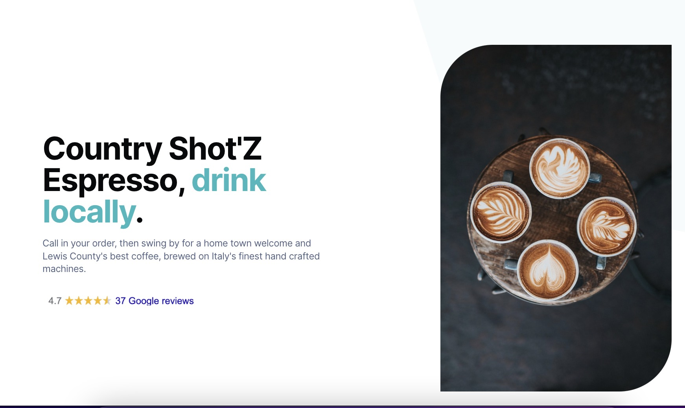
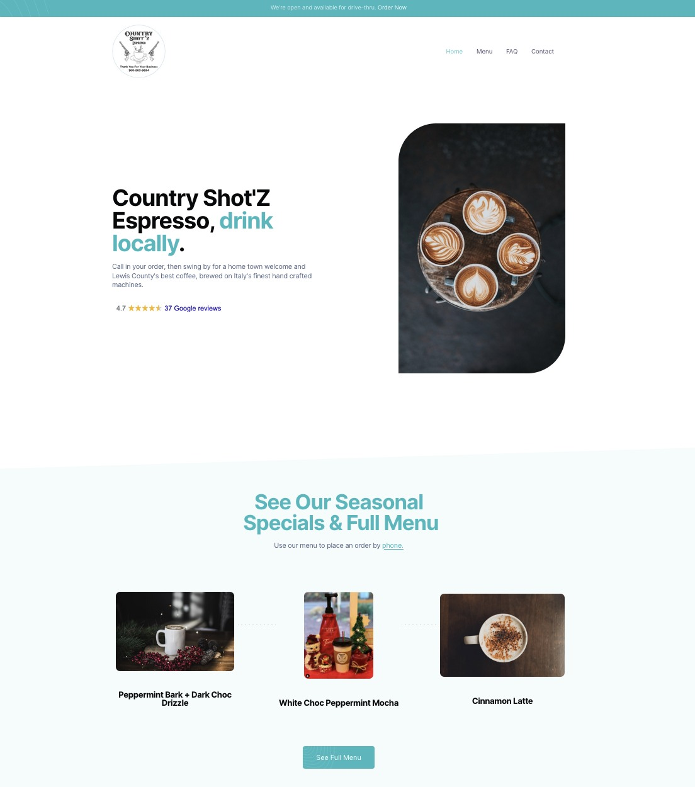

Country Shotz Espresso
Country Shotz Espresso is no longer in business. These saved views show the website I built for the coffee stand.
Organization
Country Shotz Espresso
Project type
Webflow · CMS · E-commerce · SEO
My role
Website implementation and content structure
The challenge
Customers needed a quick way to see seasonal drinks and reach the full menu. The shop also needed a way to keep changing drink information organized.
My approach
I built the Webflow site around coffee photography, the shop introduction, and a lineup of seasonal drinks that leads to the full menu. The work included a CMS, e-commerce, and search optimization.
The gallery pairs the original shop introduction with the seasonal menu view.



